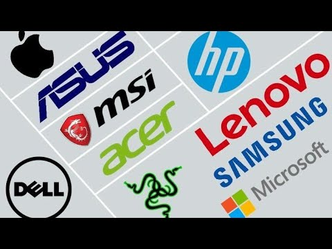
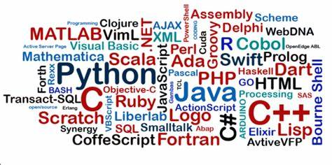

| Las marcas de computadoras más vendidas de este 2022
|
- Lenovo: Con una participación en el mercado del 23.8 %, esta marca ocupa el primer lugar en ventas del mundo
- HP Inc.: Tuvo una participación en el merado del 20.4%
- Dell: Tuvo una participación en el mercado de 17.7
- Apple: Tuvo una participación en el mercado de 9.0
- Asus: Tuvo una participación en el mercado de 7.2
|

|
Generaciones de los lenguajes de programación |
- Los lenguajes de primera generación - 1GL, son lenguajes de bajo nivel conocidos como lenguaje de máquina.
- Los lenguajes de segunda generación - 2GL, también son lenguajes ensambladores de bajo nivel. .
- Los lenguajes de tercera generación - 3GL, son lenguajes de alto nivel, como C, C++, C#, Java, BASIC, JavaScript y Visual Basic.
- Los lenguajes de cuarta generación - 4GL, son lenguajes que consisten en declaraciones similares a las declaraciones hechas en un lenguaje humano.
- Los lenguajes de quinta generación - 5GL, son lenguajes de programación que contienen herramientas visuales para ayudar a desarrollar un programa.
|

|
| lenguajes de programación más populares según el índice (julio de 2022) |
Python
Visual Basic
Java
C
JavaScript
C++
Ensamblador (Assembly)
SQL y Swift
|

|